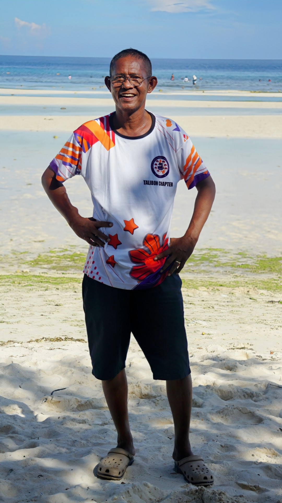

Kap Binoy has joined our Creator last November 29 at the age of 58.

A dedicated public servant, Kap Binoy served as Barangay Chairman of San Francisco, Talibon, since 2013.
Despite battling kidney disease since 2016 and undergoing regular dialysis treatments, Kap remained steadfast in his commitment to serving his community. His selfless dedication was an inspiration to all.

In addition to his dedication to the community, Kap was a loving father, grandfather, and brother. He cherished his family and was a source of unity among them.

Let us remember Kap Binoy for his selfless service, his compassionate heart, his love for his family, and his unwavering faith in God.
May he rest in peace.